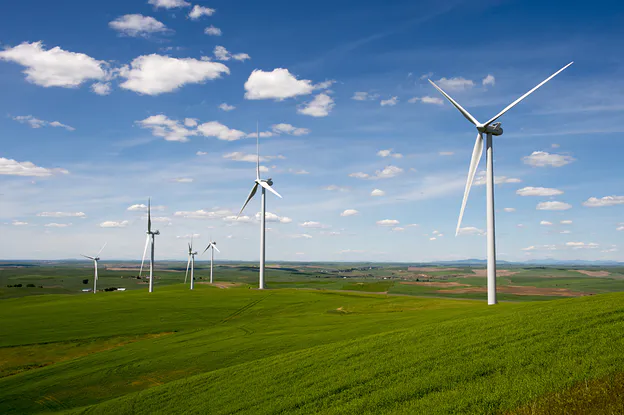

energia wiatrowa
Z racji występowania w Polsce różnych stref wietrzności, zastosowanie tego odnawialnego źródła energii nie zawsze jest opłacalne. Energetyka wiatrowa opiera się na zastosowaniu wiatraków wyposażonych w turbiny wiatrowe,
które zamieniają energię kinetyczną na elektryczną podczas ruchu obrotowego;

Energia Wiatru
Niskie emisje gazów cieplarnianych: Energia wiatru jest czystym źródłem energii, co oznacza, że nie emituje dużych ilości CO2 ani innych zanieczyszczeń powietrza, co pomaga w ograniczeniu zmian klimatycznych.
Oszczędność surowców: Wiatr jest nieograniczonym źródłem energii, co pozwala na oszczędność surowców kopalnych.
Niewyczerpalne źródło energii: Wiatr jest dostępny na całym świecie, co oznacza, że źródło energii jest praktycznie niewyczerpane.
Rozwój gospodarczy: Branża energii wiatrowej tworzy miejsca pracy, zarówno w produkcji turbin, jak i w ich utrzymaniu.
Negatywne skutki energii wiatru:
Zmienność dostępności: Energia wiatrowa jest uzależniona od warunków wiatru, co oznacza, że dostępność energii jest niestabilna.
Potencjalne skutki dla środowiska: Budowa i utrzymanie turbin wiatrowych może wpływać na lokalne ekosystemy i krajobraz, a także wpływać na ptaki i nietoperze.
Wpływ na ludzi: Turbiny wiatrowe generują hałas i wibracje, co może być uciążliwe dla pobliskich mieszkańców.
Wymagająca infrastruktura: Infrastruktura energetyki wiatrowej, takie jak turbinowe farmy morskie, może być kosztowna i wymagać zaawansowanej technologii.